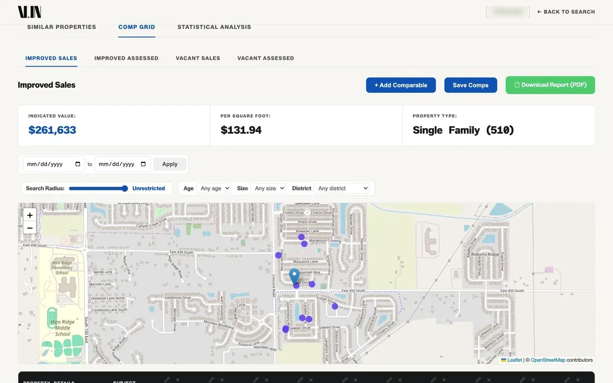
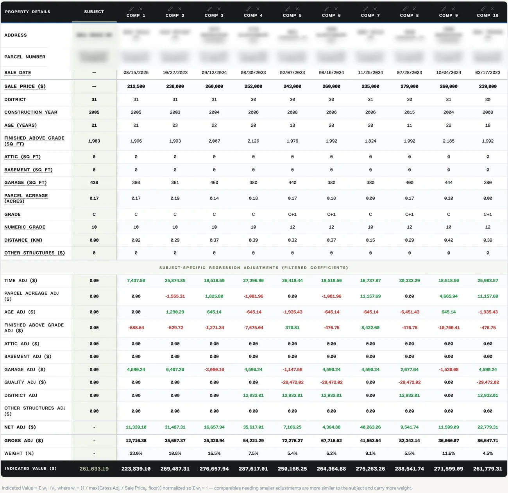
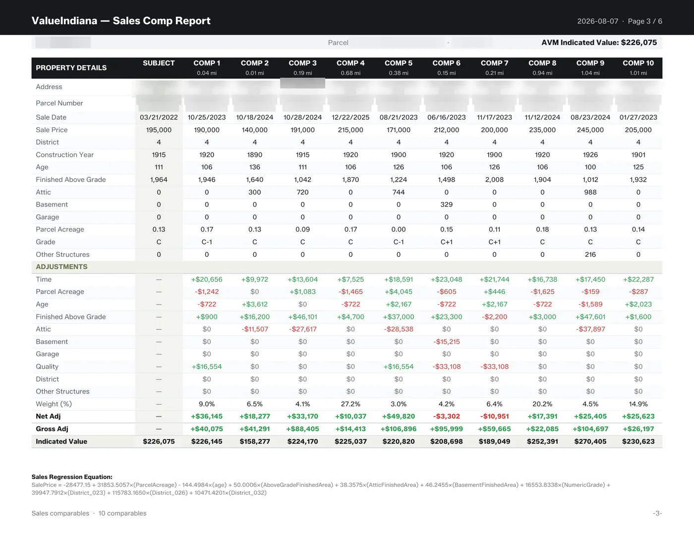
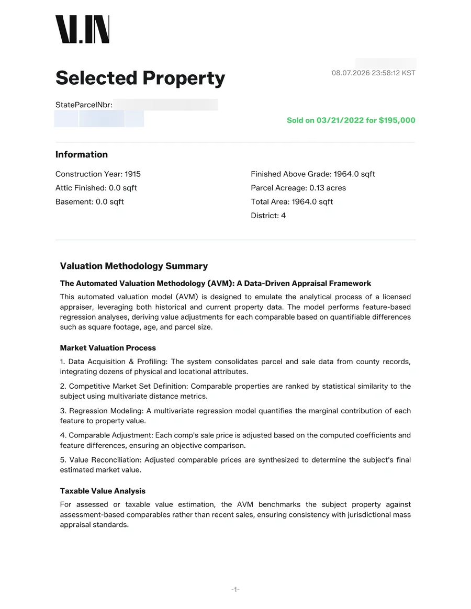

How do you get from a parcel number to a property valuation?
The useful part is the path between finding a property and explaining its value. Value Indiana brings parcel search, comparable properties, regression analysis, and a PDF report into one workflow.
My contribution
I built the data imports, search, valuation workflow, and reporting. Value Indiana is live in five Indiana counties.
From a property to a report.
01 · Start with the property.
Search by address or parcel number to find the property you want to analyze. Imported parcel records provide the starting point.
Search is the entry point to the analysis, so the database schema and indexed queries are part of the product experience.

02 · Look at the properties around it.
Comparable-property grids can be edited, with session-based overrides available in the valuation workflow.
A user can work with the comparables instead of receiving only a final number.

See the regression adjustments

03 · Take the analysis with you.
The workflow generates a PDF report from the property analysis and valuation.
The report carries the work beyond the browser, where someone can review and share it.

See the report cover and subject facts

Taking the product to ICAA.
I brought Value Indiana to ICAA to present the product.

Project links & details
Python · Flask · MySQL · scikit-learn · JavaScript
Product screenshots and report pages: SingularX’s public Value Indiana page. Redactions are preserved as published. These examples are not all from the same property analysis.